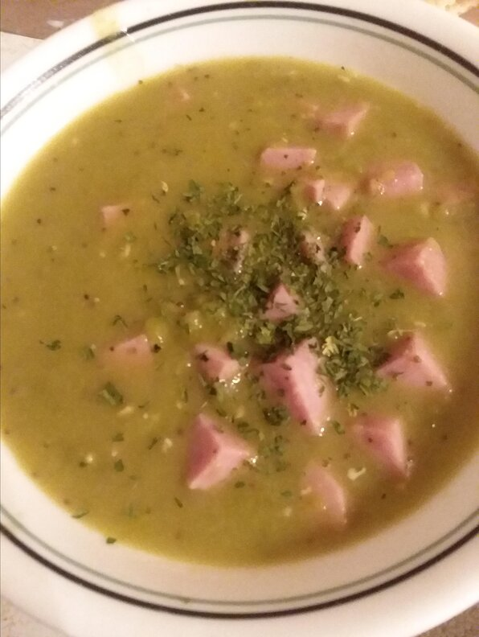

A Great Soup

Ham and Split Pea Soup Recipe
With the slightly sweet, somewhat salty, and subtly smoky flavor of the ham, this hearty soup is the ideal fall or winter soup -- a great one for lunches, or as a starter for dinner.
Ingredients
- 2 tablespoons butter
- ½ onion, diced
- 2 ribs celery, diced
- 3 cloves garlic, sliced
- 1 pound ham, diced
- 1 bay leaf
- 1 pound dried split peas
- 1 quart chicken stock
- 2 ½ cups water
- salt and ground black pepper to taste
Directions
- Place the butter in a large soup pot over medium-low heat. Stir in onion, celery, and sliced garlic. Cook slowly until the onions are translucent but not brown, 5 to 8 minutes.
- Mix in ham, bay leaf, and split peas. Pour in chicken stock and water. Stir to combine, and simmer slowly until the peas are tender and the soup is thick, about 1 hour and 15 minutes. Stir occasionally. Season with salt and black pepper to serve.
Top page
Home page